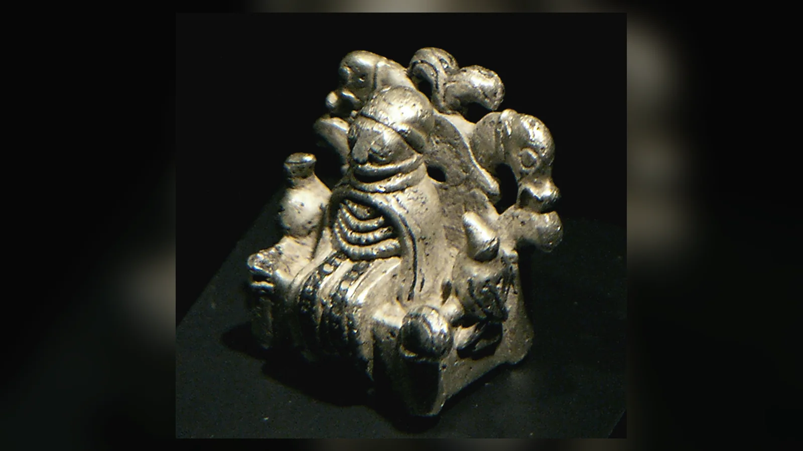
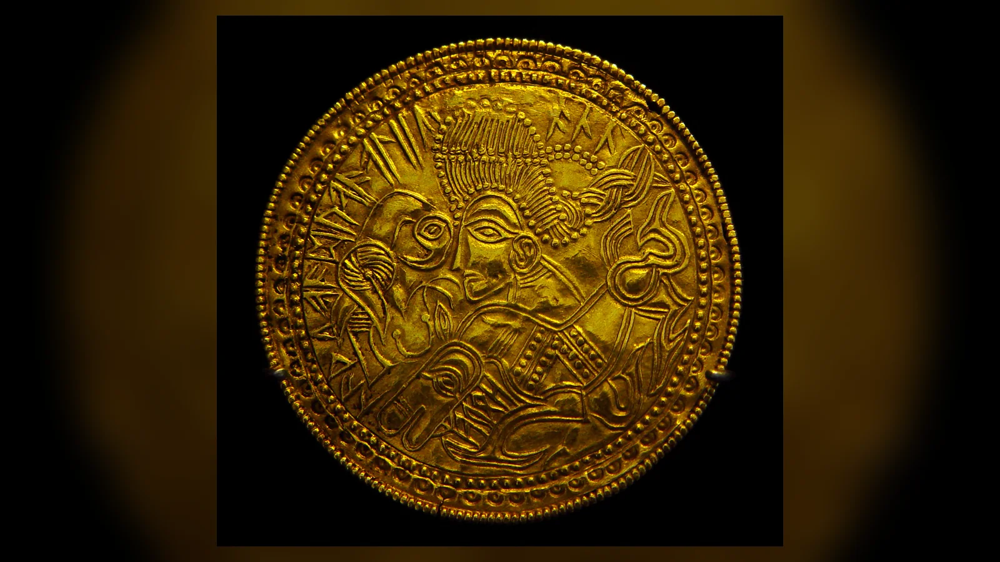
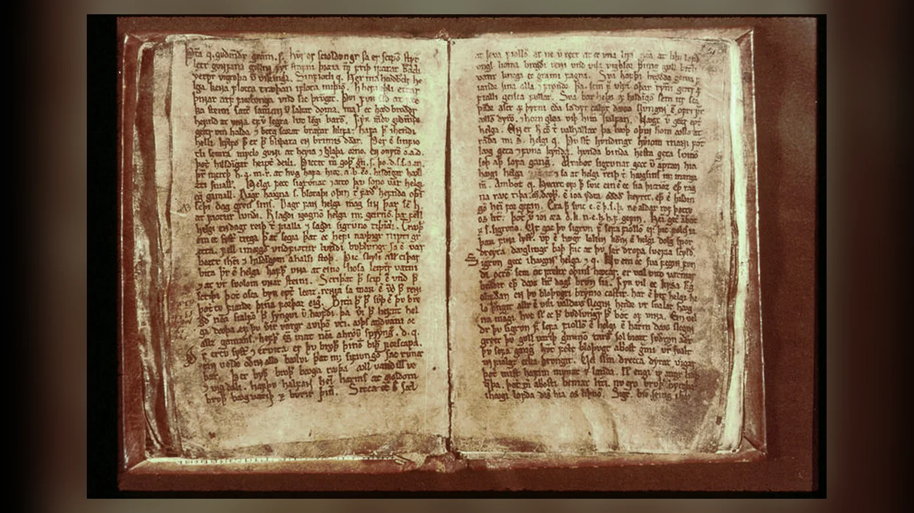
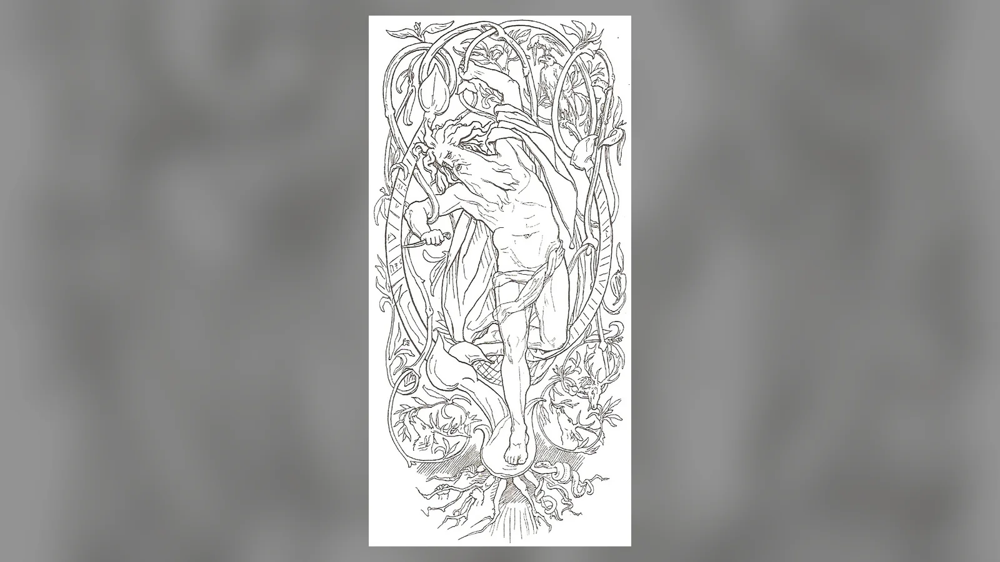
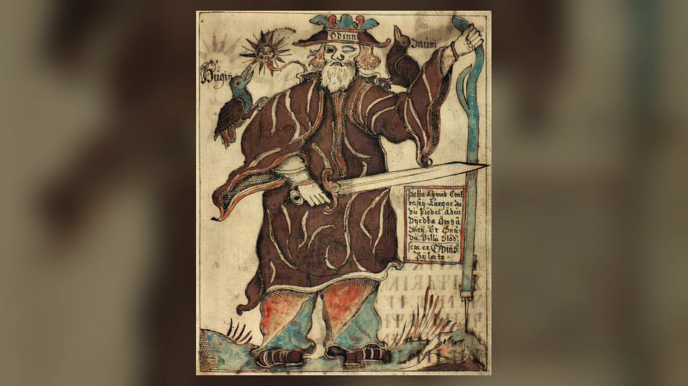
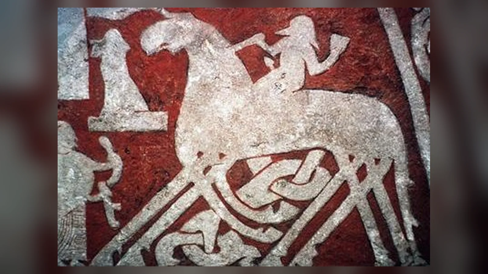
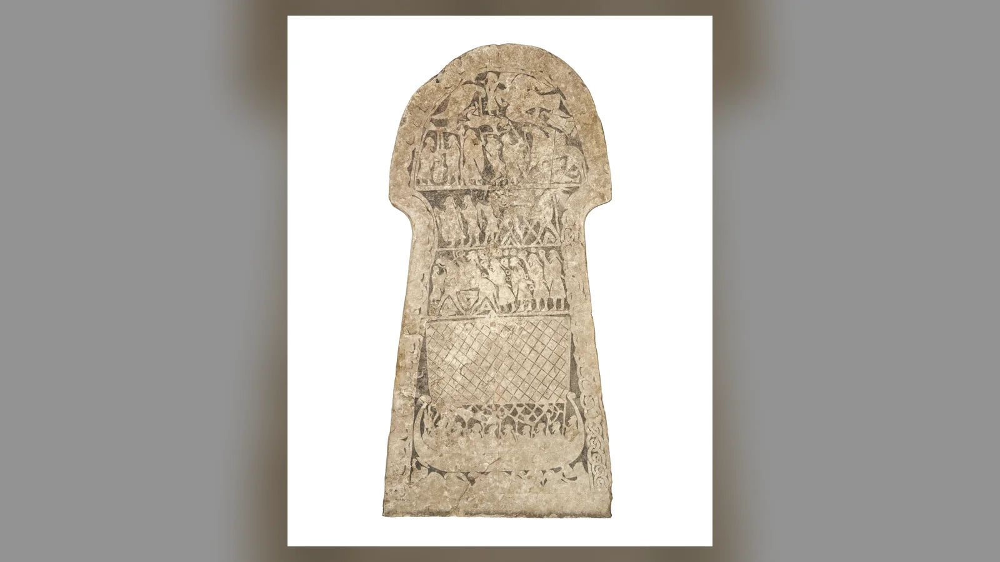
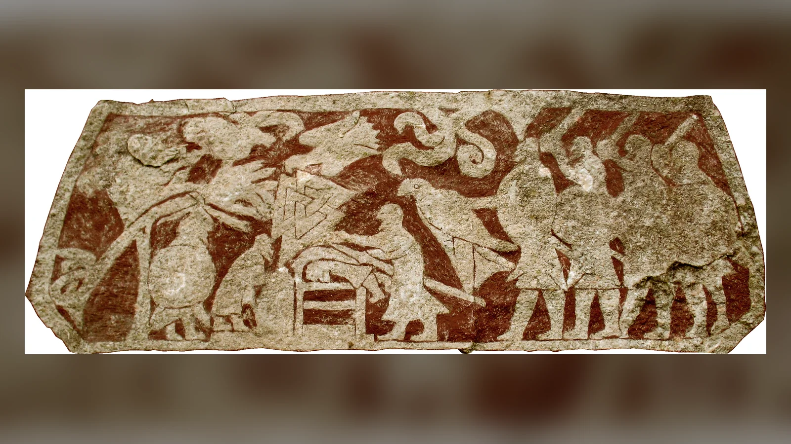

Odin kimdir? Eski Nors mitolojisinde Óðinn adıyla bilinen Odin, Æsir tanrılar topluluğunun en önde gelen figürlerinden biridir; bilgelik, savaş, ölüler, şiir, büyü, hükümdarlık, rünler ve kehanetle ilişkilendirilir. Mímir’in kuyusundaki bilgiden pay alabilmek için bir gözünü rehin bıraktığı, rünleri kavramak için dokuz gece bir ağaçta asılı kaldığı ve savaşta ölenlerin bir bölümünü Valhalla’da topladığı anlatılır. Fakat Odin’i yalnız “tanrıların kralı” veya “savaş tanrısı” diye tanımlamak, kaynakların çizdiği çok daha karmaşık kişiliği fazlasıyla basitleştirir.
Odin’in ayırt edici özelliği her şeyi baştan bilen kusursuz hükümdar olması değildir. Tam tersine sürekli daha fazla bilgi arar. Gözünden vazgeçer, kendisini mızrakla yaralayıp ağaca asar, şiir şarabını elde etmek için aldatmaya ve kılık değiştirmeye başvurur, dünyanın sonunu bildiği hâlde Ragnarök’ü engelleyemez. Valhalla’da savaşçı toplaması bile güvenli bir zafer düzeninin değil, yaklaşmakta olduğunu bildiği felakete hazırlanmanın parçasıdır.
Odin hakkındaki ayrıntılı bilgilerin büyük bölümü Viking Çağı’nın çağdaş pagan metinlerinden gelmez. Şiirsel Edda’nın temel el yazması Codex Regius yaklaşık 1270’e, Snorri Sturluson’un Nesir Edda’sı 13. yüzyılın ilk yarısına aittir. İskandinav toplumlarının Hristiyanlaşmasından sonra yazıya geçirilmiş bu eserlerin daha eski şiirsel ve sözlü malzemeyi koruduğu açıktır; fakat elimizde tek dönemde oluşturulmuş değişmez bir “Nors kutsal kitabı” yoktur. Odin’i doğru anlamak için şiirsel kaynakları, Snorri’nin sistemleştirmesini, saga geleneğini, yer adlarını ve arkeolojik yorumları birbirinden ayırmak gerekir.
Odin Kimdir ve Ne Tanrısıdır?
Odin, Eski Norsça Óðinn, eski Germen dünyasında farklı ad biçimleriyle tanınan bir tanrıdır. Şiirsel ve nesir kaynaklarda savaşta zafer ve ölüm, şiirsel esin, gizli bilgi, kehanet, rünler, büyü ve hükümdarlıkla bağlantılıdır. Snorri onu Æsir’in en yücesi olarak sistemleştirir ve Alföðr, yani “Her Şeyin Babası” unvanını öne çıkarır. Şiirsel gelenekte ise Valföðr, “Öldürülenlerin Babası”; Sigföðr, “Zafer Babası”; Grímnir, “Maskeli”; Bölverkr, “Kötülük/Dert İşleyen” gibi birbirinden farklı yönlerini açığa çıkaran adlarla karşılaşırız.
Bu kadar farklı alanın tek tanrıda birleşmesi ilk bakışta dağınık görünebilir. Odin’in alanlarının ortak noktası, gündelik düzenin sınırlarının aşıldığı anlardır. Savaşçı yaşam ile ölüm arasında, şair sıradan söz ile esin arasında, büyücü görünen dünya ile gizli bilgi arasında, hükümdar ise sıradan insan ile kutsallaştırılmış siyasi güç arasında hareket eder. Bu, kaynakların açıkça verdiği tek bir teolojik formül değil, farklı Odin anlatıları birlikte okunduğunda ortaya çıkan yorumdur.
Odin’in “bilgelik tanrısı” olması da sakin ve ahlaken kusursuz bir bilge imgesi yaratmaz. Bilgiyi elde etmek için kendini yaralar; başkalarını da araçsallaştırabilir. Savaşta bir kahramanı destekleyip daha sonra onun ölümüne yol açabilir. Şiir şarabı hikâyesinde hile ve baştan çıkarma kullanır. Seiðr büyüsü nedeniyle dönemin erkeklik normlarına aykırılıkla suçlanır. Odin’in bilgeliği ahlaki mükemmellik değil, tehlikeli bilgiye ulaşma isteğidir.
Odin Gerçekten İskandinav Mitolojisinin Baş Tanrısı mı?
“Odin İskandinav mitolojisinin baş tanrısıdır” cümlesi, özellikle Edda metinlerindeki konumunu özetlemek için kullanılabilir. Snorri’nin Gylfaginning’i Odin’i Æsir’in en yücesi ve en eskisi olarak sunar. Birçok şiirde hükümdarlık, savaş, şiir ve ölülerle ilişkisi onu merkezî figür yapar. Fakat buradan bütün İskandinavların her bölgede Odin’i en çok tapınılan tanrı kabul ettiği sonucu çıkmaz.
Hristiyanlık öncesi İskandinav dini tek merkezden yönetilen standart bir sistem değildi. Bölge, dönem ve toplumsal çevre önemlidir. Danimarka’daki yer adları Odin kültünün gerçek varlığına güçlü kanıtlar sunar; Odense adının “Odin’in kutsal alanı” anlamındaki eski biçimle ilişkisi bunun bilinen örneğidir. Buna karşılık Thor’un adı runik yazıtlarda, kişi adlarında ve maddi kültürde son derece geniş görünür. Danimarka üzerine onomastik çalışmalar Thor’un halk arasında çok güçlü konuma sahip olabileceğini gösterir.
Odin’in özellikle hükümdarlık, savaşçı seçkinler ve şiirle yakın ilişkisi onun edebî kaynaklarda olduğundan da merkezî görünmesine katkıda bulunmuş olabilir. Skaldlar şiir tanrısıyla doğal olarak ilgileniyordu; kralların çevresinde üretilen metinler de hükümdarlıkla ilişkili tanrıyı öne çıkarabilirdi. Bu nedenle “Edda panteonunun baş figürü” ile “her İskandinavın en çok ibadet ettiği tanrı” aynı iddia değildir.
Thor, Freyr, Týr ve yerel kutsal varlıkların önemini hesaba kattığımızda daha gerçekçi tablo ortaya çıkar. Odin güçlü ve geniş Germen geçmişine sahip bir tanrıdır; fakat kültünün yoğunluğu coğrafyada eşit değildir. Zeus’un Olimpos’taki hükümdarlık modelini Odin’e birebir kopyalamak bu yüzden yanıltıcıdır.
Odin’in Kökeni: Wodan, Woden ve Óðinn Aynı Tanrı mı?
Odin yalnız İskandinav dünyasına ait bir isim değildir. Eski Norsça Óðinn, Eski İngilizce Wōden ve Eski Yüksek Almanca Wuotan/Wotan biçimleri ortak Germen tanrı adının tarihsel akrabalarıdır. Dilbilimciler bunları Proto-Germence *Wōðanaz biçimine götürür. Kök; coşku, öfke, vecd, esin ve zihinsel taşkınlık gibi anlam alanlarıyla ilişkilendirilir. Bu etimoloji Odin’in şiir, savaş çılgınlığı ve büyüyle bağlantısının aynı kişilikte buluşabilmesini anlamaya yardım eder.
İngilizce Wednesday kelimesi bu Germen geçmişinin günlük dilde yaşayan izidir. Eski İngilizce Wōdnesdæg “Woden’in günü” demektir. Germen halkları Roma haftasının gezegen-tanrı adlarını kendi tanrılarıyla eşleştirirken Mercury/Mercurius gününün karşılığı Woden olmuştur. İskandinav dillerindeki onsdag gibi biçimler de aynı geleneğin izini taşır.
Tacitus’un Germania’da Germenlerin özellikle “Mercurius”a saygı gösterdiğini söylemesi interpretatio Romana, yani yabancı tanrıları Roma tanrılarıyla eşleştirme alışkanlığı içinde değerlendirilir. Tacitus’un “Mercurius” dediği tanrının daha sonraki Wodan/Odin’le bağlantısı güçlü biçimde kabul edilse de 1. yüzyıl Roma metnini 13. yüzyıl İzlanda Odin portresiyle ayrıntı ayrıntı aynı saymak mümkün değildir.
Adın farklı dillerdeki biçimleri Odin’in Viking Çağı’ndan daha eski Germen köklere sahip olduğunu gösterir. Fakat uzun zaman aralığında tanrının özelliklerinin hiç değişmediğini düşünmek de doğru olmaz. Dinî figürler göç, siyasi dönüşüm ve komşu kültürlerle temas içinde yeni anlamlar kazanabilir.
Odin Hakkındaki Kaynaklar Ne Kadar Güvenilir?
Odin araştırmasının en büyük sorunu kaynakların tarihidir. Şiirsel Edda tek yazarın hazırladığı kitap değildir; farklı dönemlerden şiirleri bir araya getiren koleksiyondur. Ana el yazması Codex Regius yaklaşık 1270 tarihlidir. Völuspá, Hávamál, Grímnismál, Vafþrúðnismál ve Lokasenna gibi şiirlerin bazı bölümlerinin yazıya geçirildikleri tarihten daha eski olduğu kabul edilir, fakat her kıtanın kesin oluşum tarihini belirlemek mümkün değildir.
Snorri Sturluson yaklaşık 1220’lerde Nesir Edda’yı yazdı. Snorri Hristiyan bir İzlandalıydı ve eserinin amaçlarından biri eski skaldik şiirin dilini açıklamaktı. Bu yüzden pagan mitlerini düzenli bir sistem hâline getirirken eski şiirlerden alıntılar yaptı. Onun eseri vazgeçilmezdir; fakat Snorri’nin anlattığı her ayrıntıyı Viking Çağı’nın değişmez inancı gibi kullanmak doğru değildir.
Skaldik şiirler bazı durumlarda daha eski tanıklık sağlar. Karmaşık ölçü ve kenning sistemi dizelerin büyük değişikliklere uğramadan aktarılmasına yardımcı olmuş olabilir. Saxo Grammaticus’un Gesta Danorum’u da bazı Germen-İskandinav mitlerinin farklılaştırılmış, çoğu zaman euhemerist ve Hristiyan yorumlu biçimlerini korur.
Runik yazıtlar, yer adları, brakteatlar, Gotland resim taşları ve küçük figürler yazılı geleneği denetlemek için önemlidir. Fakat arkeolojik eser konuşmaz: bir kuşlu figürün Odin olduğunu söylemek için karşılaştırmalı ikonografi gerekir. En güvenli yöntem, kaynakların birbirini nerede desteklediğini ve nerede ayrıldığını açıkça göstermektir.
Odin’in Ailesi: Annesi, Babası, Eşi ve Çocukları
Snorri’nin Gylfaginning anlatısında Odin’in babası Borr, annesi dev soyundan Bestla’dır; kardeşleri Vili ve Vé’dir. Bu üç kardeş Ymir’i öldürerek kozmik düzenin kurulmasında rol oynar. Odin’in eşi Frigg’dir. Ancak internette dolaşan tek ve kusursuz “Odin aile ağacı”, farklı kaynakların birleştirilmesiyle oluşur.
Thor’un babası Odin’dir; annesi Jörð’dür. Baldr, Víðarr ve Váli farklı şiirsel ve nesir kaynaklarda Odin’in oğulları olarak görünür. Snorri Höðr ve başka figürleri de daha geniş soy sistemine yerleştirir. Týr konusunda kaynaklar uyuşmaz: Snorri onu Odin’in oğulları arasında sayabilirken Hymiskviða, Týr’ın babası olarak dev Hymir’i işaret eden farklı geleneği korur.
Frigg’i yalnız “Odin’in karısı” diye tanımlamak eksiktir. Kaynaklarda kader bilgisiyle, Baldr’ın ölümü etrafındaki olaylarla ve yüksek statülü kadın figürüyle ilişkilidir. Lokasenna’da Odin bile Frigg’in insanların kaderini bildiğini söyler. Frigg ile Freyja’nın daha eski tek tanrıçadan ayrılmış olabileceği yönünde akademik teoriler vardır; fakat Edda metinlerinde iki ayrı figürdürler ve köken birliği kanıtlanmış sonuç değildir.
Loki ise Odin’in oğlu değildir. Marvel uyarlamalarının yarattığı aile ilişkisi eski Nors kaynaklarına ait değildir. Lokasenna 9’da Loki, Odin’e geçmişte kanlarını karıştırdıklarını ve birlikte içmeye ilişkin söz verdiklerini hatırlatır. Bu yakın ritüel bağa işaret eder; evlat edinme anlatısı değildir.
Odin Dünyanın Yaratılışında Nasıl Rol Aldı?
Snorri’nin kozmogonisine göre Odin, Vili ve Vé ilk dev Ymir’i öldürür ve onun bedeninden dünyayı şekillendirir. Etinden toprak, kanından denizler, kemiklerinden dağlar, kafatasından gök kubbe oluşturulur. Bu, yaratılışı yoktan var etme değil, ilksel varlığın bedenini düzenli kozmosun maddesine dönüştürme modelidir.
İnsanlığın başlangıcında kaynak farkı daha da önemlidir. Völuspá 17–18’de üç tanrı Odin, Hœnir ve Lóðurr, güçsüz hâlde buldukları Ask ile Embla’ya yaşam için gerekli nitelikleri verir. Odin nefes/ruh, Hœnir zihinsel yeti, Lóðurr ise bedenle ilgili özellikler sağlar. Snorri’nin Gylfaginning’inde ise deniz kıyısındaki iki ağaçtan insanları yaratanlar Borr’un oğullarıdır; anlatı Odin, Vili ve Vé üçlüsüne bağlanır.
Bu fark küçük değildir. “İskandinav mitolojisine göre ilk insanları Odin, Vili ve Vé yarattı” cümlesi Snorri’nin versiyonunu doğru aktarabilir, fakat Völuspá’nın farklı üçlüsünü görünmez kılar. Lóðurr’un Loki veya başka tanrıyla özdeşliği üzerine teoriler vardır; kesin sonuç yoktur.
Odin’in yaratılıştaki rolü onun yalnız savaş sonrasındaki ölülerle ilgilenen tanrı olmadığını gösterir. Kozmik düzenin kurulmasına, insanın canlandırılmasına ve daha sonra dünyanın sonundaki savaşa uzanan çizgide yer alır. Buna rağmen Edda sisteminin bütün ayrıntılarını tek bir pagan “inanç kitabı” gibi okumamak gerekir.

Odin Neden Tek Gözlüdür?
Odin’in tek gözü, bilgiyi bedelsiz kabul etmeyen kişiliğinin en tanınmış işaretidir. Völuspá’da Odin’in “rehini”nin Mímir’in kuyusunda bulunduğuna gönderme yapılır. Snorri’nin Gylfaginning’i bu rehini açıkça Odin’in gözü olarak açıklar: Mímir’in kuyusu bilgelik ve anlayışla doludur; Odin kuyudan içmek ister ve bunun karşılığında gözünü bırakır.
Popüler anlatılar sahneyi çoğu zaman ayrıntılı pazarlığa dönüştürür: Odin gözünü çıkarır, kuyuya atar ve anında evrenin bütün bilgisini kazanır. Kaynaklar bu kadar sinematik değildir. Völuspá kısa gönderme yapar; Snorri gözün rehin verilmesini açıklar. Hangi gözün verildiği söylenmez. Bu nedenle “Odin sağ gözünü verdi” veya “sol gözünü verdi” şeklindeki kesin ifadeler kaynak dışıdır.
Göz fedakârlığı ile Yggdrasil’de asılma iki ayrı anlatıdır. Birinde Mímir’in kuyusu ve bilgi karşılığında bırakılan göz vardır; diğerinde Odin kendisini kendisine kurban ederek rünleri kavrar. Modern özetlerde ikisini tek büyük “bilgelik sınavı” hâline getirmek kolaydır, fakat metinsel olarak ayrı sahnelerdir.
Tek gözlü arkeolojik figürlerin Odin olarak yorumlanması da dikkat ister. Bazı nesnelerde gözlerden birinin farklı işlenmesi Odin teşhisini destekleyebilir; fakat tek başına kesin kanıt değildir. Bağlam, kuşlar, taht, mızrak veya başka ikonografik özelliklerle birlikte değerlendirilmelidir.
Odin Neden Yggdrasil’e Asıldı?
Hávamál’ın 138–141. kıtaları Odin’in en çarpıcı anlatılarından birini korur. Odin dokuz gece rüzgârlı bir ağaçta asılı kaldığını, mızrakla yaralandığını ve “kendimi kendime” sunulduğunu söyler. Yiyecek ve içecek almaz; aşağı bakar, rünleri kavrar ve çığlıkla düşer. Şiirin bu bölümü modern araştırmada çoğu kez Rúnatal adıyla anılır.
Kıtanın kendisi ağacı açıkça “Yggdrasil” diye adlandırmaz; geleneksel ve akademik yorum onu dünya ağacıyla ilişkilendirir. Yggdrasil adının “Yggr’ın atı” biçiminde açıklanması da Odin’in asılma motifiyle bağlantılıdır; “at”ın darağacı için şiirsel mecaz olabileceği düşünülür. Ancak metinde olmayan ayrıntıları doğrudan kaynak cümlesi gibi sunmamak gerekir.
Odin burada bir başkasına kurban edilmez. Paradoks tam tersidir: kurbanı sunan, kurban edilen ve kurbanın adandığı varlık aynı tanrıdır. Bu, Hávamál’daki sahnenin din tarihi açısından bu kadar tartışılmasının nedenlerinden biridir. Araştırmacılar inisiyasyon, kendini kurban etme ve bilgi edinme ritüelleriyle karşılaştırmalar yapmıştır.
Ağaçta asılma ve mızrak yarası Hristiyan okuyucuya İsa’nın çarmıha gerilmesini hatırlatabilir. Hávamál’ın yazıya geçirildiği Hristiyan Orta Çağ bağlamı nedeniyle etkileşim ihtimali tartışılmıştır. Fakat benzerlikten doğrudan “Odin hikâyesi İsa’dan kopyalandı” sonucu çıkmaz. Metnin oluşum tarihi ve sözlü geçmişi kesin çizgilerle yeniden kurulamadığı için ihtiyat gerekir.


Odin ve Rünler: Bilginin Bedeli Neden Acıdır?
Odin’in ağaca asılmasının hedefi rünlerle bağlantılı bilgidir. Hávamál, onun rünleri “aldığını”, “kavradığını” veya “topladığını” ifade eden sahne sunar. Bu yüzden “Odin rün alfabesini icat etti” demek doğru değildir. Tarihsel rünler Germen dillerini yazmak için kullanılan yazı sistemleridir; en eski runik yazıtlar arkeolojik ve dilbilimsel olarak incelenebilir maddi belgelerdir. Mitolojik anlatı ise rünlere atfedilen gizli ve büyülü bilgiyle ilgilidir.
Rün sözcüğünün “sır/gizem” anlam alanıyla ilişkisi, yazı ile gizli bilgi arasındaki bağı güçlendirmiştir. Hávamál’ın sonraki kıtalarında rünlerin kazınması, okunması, boyanması ve kullanılmasıyla ilgili sorular bulunur. Aynı şiirin Ljóðatal olarak adlandırılan son bölümünde çeşitli etkileri olan büyülü şarkılar anlatılır. Bunları günümüzdeki “rune tarot” uygulamalarının tarihsel kılavuzu gibi okumak doğru olmaz.
Odin’in rünlerle ilişkisi onun bilgi modelini gösterir: bilgi dışarıdan verilen rahat bir armağan değildir. Bedensel acı, açlık, susuzluk ve ölüm sınırına yaklaşma pahasına elde edilir. Mímir’in kuyusundaki göz ile ağaçtaki beden birbirinden ayrı mitler olsa da aynı karakter özelliğini güçlendirir: Odin bilmek için kendinden parça vermeye hazırdır.
Bu arayışın ironisi Ragnarök’tür. Odin geleceğe ilişkin çok şey bilir, kehanetleri dinler, ölü bilgeleri sorgular ve rünlerin sırlarına ulaşır; yine de sonunu ortadan kaldıramaz. İskandinav mitolojik düşüncesinde bilgi, kader üzerinde otomatik egemenlik sağlamaz.
Şiir Şarabı: Odin Şiiri Nasıl Ele Geçirdi?
Odin’in şiirle ilişkisini en iyi gösteren anlatılardan biri şiir şarabının elde edilmesidir. Snorri’nin Skáldskaparmál’ında bilge Kvasir öldürülür; kanı cüceler Fjalar ve Galar tarafından balla karıştırılarak içene şiir ve bilgelik yeteneği veren içkiye dönüştürülür. Şarap daha sonra dev Suttungr’ın eline geçer ve kızı Gunnlöð tarafından korunur.
Odin Bölverkr adını kullanarak Suttungr’ın kardeşi Baugi’nin yanına gider. Çalışır, hile yapar, dağa açılan delikten yılan biçiminde içeri girer ve Gunnlöð’e ulaşır. Snorri’nin anlatısında onunla üç gece geçirir; karşılığında üç yudum içme hakkı kazanır, fakat her yudumda kaplardan birini tamamen boşaltır. Ardından kartal biçimine girerek kaçar. Suttungr da kartal olup peşine düşer; Odin içkiyi Æsir’in kaplarına aktarır.
Hávamál 104–110 aynı olayın daha kısa ve her ayrıntıda Snorri’yle özdeş olmayan biçimini korur. Odin Gunnlöð’den söz eder; yeminler ve hile etrafında rahatsız edici ahlaki tablo ortaya çıkar. Bu hikâyede şiirin tanrısı asil öğretmen gibi davranmaz; bilgiyi ele geçirmek için baştan çıkarma ve aldatmayı kullanır.
Şiir şarabı anlatısı Odin’in ikircikli doğasının iyi örneğidir. Şiir kutsal esin, hafıza ve hükümdarlık övgüsünün güçlü aracıdır; fakat ona erişim hikâyesi ahlaki bakımdan temiz değildir. Odin’in bilgeliği modern anlamda “iyi insan olma” erdemiyle aynı şey değildir.
Odin’in Kuzgunları Huginn ve Muninn Ne Anlama Gelir?
Odin’in iki kuzgunu Huginn ve Muninn’dir. Adlar genellikle “düşünce/zihin” ve “hafıza” anlam alanlarıyla açıklanır. Grímnismál 20’de iki kuşun her gün dünya üzerinde uçtuğu, Odin’in Huginn’in dönmemesinden korktuğu fakat Muninn için daha da kaygılı olduğu söylenir.
Şiir bu kısa kıtada kuşların Odin’in “gözleri” olduğunu söylemez. Snorri’nin Gylfaginning’i anlatıyı genişletir: kuzgunlar şafakta dünyanın üzerine gönderilir, gördüklerini ve duyduklarını Odin’e haber vermek için geri döner ve omuzlarına konarlar. Bu yüzden Odin’in çok şey bildiği açıklanır. Popüler “Odin’in casus kuzgunları” imgesi büyük ölçüde bu nesir açıklamasına dayanır.
Muninn’in dönüşü için daha fazla kaygı duyulmasının ne anlama geldiği yorumlanmıştır. Hafızanın kaybı, ruhsal yolculuk veya düşünce ile bellek arasındaki fark gibi okumalar mümkündür; fakat şiir sembolizmi açıklamaz. “Odin hafızasını kaybetmekten korkuyordu” cümlesi yorumdur, doğrudan kaynak bilgisi değildir.
Kuzgunun savaş alanındaki gerçek ekolojik varlığı da önemlidir. Cesetlerle beslenen kuzgunlar savaş ve ölümle doğal ilişkiye sahiptir. Odin’in savaşta ölenlerle bağlantısı düşünüldüğünde kuşların ona eşlik etmesi güçlü sembolik uyum yaratır.

Odin’in Kurtları Geri ve Freki
Grímnismál 19, Odin’in Geri ve Freki adlı iki kurdunu beslediğini, kendisinin ise şarapla yaşadığını söyler. İsimler açgözlülük ve oburluk anlam alanlarıyla ilişkilidir. Snorri de bu bilgiyi Valhalla tasvirine taşır.
Geri ve Freki, Fenrir değildir. Fenrir Loki’nin dev kurt oğludur ve Ragnarök’te Odin’i öldüren varlıktır. Odin’in yanında duran iki kurt ise onun hayvan yoldaşlarıdır. İnternet görsellerinde bütün kurt motiflerinin Fenrir diye etiketlenmesi bu ayrımı siler.
Kuzgun ve kurt birlikteliği savaş alanının gerçek dünyasıyla da uyumludur. İki hayvan da savaş sonrası cesetlerle ilişkilendirilebilir. Eski Germen savaş şiirinde kartal, kuzgun ve kurt gibi hayvanlar ölümün yaklaştığını gösteren edebî motiflere dönüşür. Odin’in çevresinde bu hayvanların toplanması onun savaş ve ölüler yönünü pekiştirir.
Sleipnir Neden Sekiz Ayaklıdır?
Sleipnir, Odin’in sekiz ayaklı atıdır ve Snorri onu atların en iyisi olarak tanımlar. Doğum hikâyesi Asgard’ın surlarını inşa eden gizemli ustayla bağlantılıdır. Usta, işi belirlenen sürede bitirirse Freyja’yı, güneşi ve ayı ücret olarak ister; tanrılar şartlı biçimde kabul eder. Fakat ustanın aygırı Svaðilfari olağanüstü güçle taş taşıdığı için inşaat beklenenden hızlı ilerler.
Tanrılar anlaşmanın sonuçlarından korkunca Loki’yi çözüm bulmaya zorlar. Loki kısrak biçimine girerek Svaðilfari’yi işten uzaklaştırır. İnşaat zamanında tamamlanamaz; ustanın dev olduğu anlaşılır ve Thor onu Mjölnir’le öldürür. Loki daha sonra sekiz ayaklı Sleipnir’i doğurur ve at Odin’in bineği olur.
Bu hikâyenin ayrıntılı biçimi Snorri’nin Gylfaginning 42’sinde bulunur; Loki’nin Svaðilfari’den Sleipnir’i doğurmasına şiirsel gelenekte de gönderme vardır. Böylece motif tamamen Snorri’nin icadı olarak görülemez, ancak elimizdeki en bütünlüklü olay örgüsü ondan gelir.
Sleipnir’in sekiz ayağının cenaze taşıyıcılarını simgelediği veya şamanik ruh yolculuğunun doğrudan işareti olduğu yönünde yorumlar yapılmıştır. Atın dünyalar arası yolculuk ve ölümle bağlantısı karşılaştırmaya açıktır; fakat sekiz ayağın anlamını açıklayan Eski Nors metni yoktur. Ardre VIII ve Tjängvide I gibi Gotland resim taşlarında sekiz ayaklı at üzerindeki binici sahneleri, Sleipnir-Odin teşhisi için önemli ikonografik kanıt kabul edilir.

Odin’in Mızrağı Gungnir ve Diğer Eşyaları
Odin’in en tanınmış silahı Gungnir’dir. Snorri’nin Skáldskaparmál anlatısında Loki, Sif’in saçını kestikten sonra cücelere değerli nesneler yaptırır; İvaldi’nin oğulları altın saç, Skíðblaðnir gemisi ve Odin’in mızrağı Gungnir’i üretir. Mızrak kusursuz işleviyle tanımlanır ve Odin’in savaşçı kimliğinin başlıca işaretlerinden biri olur.
Savaşın başlangıcında düşman ordusunun üzerine mızrak atarak onu Odin’e adama motifi saga ve şiir geleneğinde görülür. Bu davranışın bütün tarihsel savaşlarda uygulanan standart ritüel olduğunu söylemek aşırı olur; fakat Odin, mızrak ve savaşın kaderi arasındaki bağlantı güçlüdür.
Draupnir Odin’in altın yüzüğüdür. Snorri’ye göre cüce Sindri’nin yaptığı yüzük her dokuzuncu gece kendisiyle aynı ağırlıkta sekiz yüzük üretir. Baldr’ın cenaze ateşine Odin tarafından bırakılır ve daha sonra Hel’den geri gönderilir. Dokuz sayısı Odin’in ağaçta geçirdiği dokuz gece gibi başka bağlamlarda da görülür; bütün “dokuz” örneklerini tek gizli matematik sistemine bağlamak için kanıt yoktur.
Hlidskjálf, Odin ve Frigg’le ilişkilendirilen yüksek oturaktır. Buradan dünyaları görebilme fikri hükümdarlık ile bilgi arasında görsel bağ kurar. Lejre’deki küçük gümüş figürün yüksek tahtta, kuşlarla çevrili olması bu nedenle Odin teşhisini destekleyen özelliklerden biridir; yine de “kesin Odin portresi” yerine “yaygın biçimde Odin olarak yorumlanan” ifadesi daha doğrudur.
Valhalla Nedir ve Kimler Oraya Gider?
Valhalla, Eski Norsça Valhöll, “öldürülenlerin salonu” anlamıyla Odin’in savaşta ölen seçilmiş savaşçılarıyla ilişkilendirilen salonudur. Buradaki einherjar her gün savaşır, birbirlerini öldürür, sonra yeniden ayağa kalkarak akşam ziyafetine katılır. Sæhrímnir adlı domuz her gün pişirilir ve yeniden bütünleşir; Heiðrún adlı keçinin sağladığı içki savaşçılara sunulur. Bu sonsuz savaş talimi Ragnarök hazırlığıdır.
Fakat “Vikingler ölünce Valhalla’ya giderdi” cümlesi yanlıştır. Öncelikle Viking bütün İskandinav toplumunun eş anlamlısı değildir. İkinci olarak Grímnismál 14, Freyja’nın Fólkvangr’da savaşta ölenlerin yarısını seçtiğini, diğer yarısının Odin’e ait olduğunu söyler. Kaynakların ölüm sonrası dünya tasvirleri bundan da çeşitlidir.
Hel, savaş dışında ölenlerle ilişkilendirilen önemli ölüm alanıdır; ancak Hristiyan cehenneminin birebir karşılığı değildir. Denizle bağlantılı ölüler için Rán anlatıları vardır. Mezar höyüklerinde yaşamaya devam eden ölüler ve atalarla ilgili saga gelenekleri de tek standart ölüm sonrası coğrafyanın bulunmadığını gösterir.
Valhalla’nın modern “iyi Vikinglerin cenneti”ne dönüştürülmesi Hristiyan cennet-cehennem şemasını Nors malzemesine giydirir. Edda’daki Valhalla ahlaki ödül merkezi değildir. Oraya alınmanın ölçütü “iyi insan olmak” değil, savaşta ölüm ve Odin’in yaklaşan Ragnarök için savaşçı toplamasıyla ilgilidir.
Valkyrieler Kimdir?
Valkyrie, Eski Norsça valkyrja, kelime olarak “öldürülenleri seçen” anlamıyla ilişkilidir. Şiirsel kaynaklarda savaşın ölümcül kaderini belirleyen, savaşçılarla ilişki kuran ve seçilmiş ölüleri Odin’in salonuna götüren kadın varlıklar olarak görünürler. Snorri onları Odin’in savaşlara gönderdiği, kimlerin öleceğini ve zaferi belirleyen figürler olarak sistemleştirir.
Modern resimlerdeki kanatlı miğferli, parlak zırhlı “Viking kadın savaşçı” kalıbı tarihsel kaynakların doğrudan fotoğrafı değildir. Valkyrieler şiirde bazen korkutucu ölüm güçleri, bazen içki sunan salon figürleri, bazen kahramanlarla kişisel ilişki kuran doğaüstü kadınlar olarak görünür. Geç Orta Çağ ve özellikle 19. yüzyıl sanatı bu imgeleri yeni görsel kalıplara sokmuştur.
Valhalla ile bağlantıları güçlüdür; fakat Grímnismál’daki Freyja paylaşımı, savaşta ölenlerin kaderinin yalnız Odin merkezli tek sisteme indirgenemeyeceğini tekrar hatırlatır. “Valkyrieler bütün ölü Vikingleri Valhalla’ya götürür” şeklindeki cümle bu yüzden iki ayrı genellemeyi aynı anda içerir.
Odin, Savaş ve Ölüler
Odin savaş tanrısıdır, fakat Thor gibi doğrudan fiziksel güç sembolü değildir. Zafer, savaşın kaderi, savaşçı seçimi, mızrak, korku ve ölüm onun alanında birleşir. Bir savaşçı Odin’in desteğini kazanabilir; aynı tanrı daha sonra onu ölüme seçebilir. Bu davranış modern “koruyucu tanrı sadakati” beklentisine uymaz.
Odin’in savaşta ölen seçkinleri Valhalla’ya toplamasının Ragnarök’le bağlantısı bu ikircikliliği anlamlı kılar. En iyi savaşçının erken ölümü insan açısından felaket, Odin açısından gelecekteki ordusuna yeni einherji katılması olabilir. Efsanelerde tanrının kahramanları yüzüstü bırakması bu nedenle yalnız keyfî kötülük olarak okunamaz; kozmik son savaş hazırlığıyla ilişkilendirilebilir.
Asma ve mızrakla yaralama Odin’e atfedilen kurban biçimleri arasında tartışılır. Hávamál’daki kendi kendini kurban sahnesi iki motifi birlikte taşır. Adam of Bremen’in Uppsala hakkında anlattığı insan ve hayvan kurbanları, saga malzemesi ve bazı arkeolojik buluntular daha geniş tartışmanın parçalarıdır. Fakat tek bir asılmış beden buluntusunu doğrudan “Odin’e kurban” ilan etmek için yeterli bağlam olmayabilir.
Bu alan yazılı kaynakların geç tarihi nedeniyle özellikle dikkat ister. Hristiyan yazarların pagan ritüellerini düşmanca veya egzotik göstermesi mümkündür; arkeoloji ise ritüelin hangi tanrıya adandığını çoğu zaman tek başına söylemez.
Odin ve Seiðr Büyüsü
Seiðr, Eski Nors kaynaklarında kehanet, kader üzerinde etki, zihin veya algı değişimi ve başka büyülü uygulamalarla ilişkilendirilen karmaşık kavramdır. Onu modern “cadılık” sözcüğüyle tek kelimede karşılamak yanıltıcıdır. Snorri’nin Ynglinga saga’sında Freyja’nın Æsir’e seiðr öğrettiği ve Odin’in bu sanatta usta olduğu anlatılır.
Fakat seiðr’in erkekler tarafından uygulanması toplumsal cinsiyet açısından sorunlu görülebilirdi. Lokasenna’da Loki, Odin’i Samsø’de büyü yaptığı ve völva benzeri davranış gösterdiği için ergi/arglıkla suçlar. Kavramın tam toplumsal ve cinsel anlamı tartışmalıdır; “eşcinsel” gibi modern kimlik etiketlerine doğrudan çevirmek doğru değildir. Temel mesele erkeklik normlarına aykırılık ve utandırıcı kabul edilen davranış alanıdır.
Bu durum Odin’in karakterindeki çelişkiyi büyütür. Bir yandan hükümdarlık ve savaşçı aristokrasiyle bağlantılı en yüksek statülü erkek tanrıdır; diğer yandan bilgi ve büyü uğruna kendi toplumunun erkeklik normlarını ihlal etmekle suçlanabilecek pratiği kullanır. Odin için bilgi arayışı sosyal itibarın bile önüne geçebilir.
Neil Price’ın seiðr üzerine çalışmaları uygulamaları şamanizmle karşılaştırmıştır; fakat “Viking şamanizmi” etiketi dikkatli kullanılmalıdır. Benzerlikler yararlı olabilir, farklı kültürlerdeki bütün trans, kehanet ve ruh yolculuğu pratiklerini tek evrensel kategoriye sıkıştırmak tarihsel ayrıntıyı kaybettirebilir.
Odin Neden Bu Kadar Çok İsim Kullanır?
Odin’in onlarca adı vardır. Grímnismál ve Snorri’nin aktardığı listeler onun tek sabit görünüşle dolaşan tanrı olmadığını gösterir. Grímnir “maskeli/gizlenmiş”, Hár “Yüksek”, Jafnhár “Eşit derecede yüksek”, Þriði “Üçüncü”, Sigföðr “Zafer Babası”, Valföðr “Öldürülenlerin Babası”, Bölverkr ise karanlık çağrışımlı bir addır.
Bu isimler yalnız süslü lakaplar değildir. Odin’in kılık değiştirme, kimliğini saklama ve farklı işlevlerde görünme alışkanlığıyla uyumludur. Vafþrúðnismál’da devle bilgelik yarışmasına girer; Grímnismál’da kimliğini saklayan gezgin olarak karşımıza çıkar; şiir şarabında Bölverkr adını kullanır.
Odin’i uzun sakallı, tek gözlü, geniş şapkalı yaşlı adam olarak düşünmemiz ortaçağ metinleri ve daha sonraki sanatın birleşiminden doğan güçlü imgedir. Tanrının mitolojik özelliği tam da tek görüntüye sığmamasıdır. Çok sayıdaki isim, onun farklı anlatılarda farklı toplumsal ve kozmik roller üstlenmesine olanak verir.
Odin ile Thor Arasındaki Fark Nedir?
Odin ile Thor arasındaki farkı “Odin zekâ, Thor kas gücü” diye özetlemek kolay ama yetersizdir. Odin hükümdarlık, şiir, savaşın kaderi, ölüler ve büyüyle; Thor ise gök gürültüsü, devlerle mücadele, fiziksel koruma ve Mjölnir’le ilişkilidir. Thor’un devleri öldürmesi kozmik düzeni dış tehditlere karşı koruyan tekrar eden işlevdir.
Toplumsal bağlam da farklı görünür. Odin krallar, savaşçı seçkinler ve şairlerle güçlü bağ taşırken Thor’un daha geniş halk kesimlerinde popüler olduğuna işaret eden maddi ve onomastik kanıtlar vardır. Thor çekici kolyelerinin yaygınlığı ve runik taşlardaki “Thor kutsasın” formülleri bunun önemli parçalarıdır.
Bu, Odin’in halk arasında hiç tapınılmadığı veya Thor’un seçkinlerle ilgisi olmadığı anlamına gelmez. Sınırlar geçirgendir. Ancak edebî kaynaklarda Odin’in merkeziyeti, gerçek kült dağılımını birebir yansıtmayabilir. Danimarka ve İsveç’in bazı bölgelerinde Odin’e ilişkin yer adları güçlüdür; başka alanlarda Thor veya Freyr daha görünür olabilir.
Mitlerde Thor Odin’in oğludur. Aralarında modern süper kahraman anlatısındaki duygusal baba-oğul dinamiğini aramak yerine, kaynakların onları farklı kozmik ve toplumsal işlevlerle konumlandırdığı görülmelidir.
Odin ile Loki’nin Gerçek İlişkisi
Eski Nors mitolojisinde Loki Odin’in oğlu değildir; Thor’un kardeşi de değildir. Loki’nin babası Fárbauti, annesi Laufey olarak verilir. Marvel evrenindeki aile düzeni modern dramatik uyarlamadır.
Odin ile Loki arasındaki en önemli doğrudan ilişki Lokasenna 9’dadır. Loki, Odin’e eski günlerde kanlarını birbirine karıştırdıklarını ve Odin’in ikisine birden sunulmadıkça içki içmeyeceğine söz verdiğini hatırlatır. Bu, aralarında özel ve bağlayıcı ilişki bulunduğunu düşündürür. Fakat olayın nasıl gerçekleştiğini anlatan bağımsız mit günümüze ulaşmamıştır.
“Kan kardeşi” çevirisi anlamı açıklamak için kullanılabilir, ancak modern aile hukukundaki kardeşlik veya evlat edinme değildir. Loki’nin Æsir arasında bulunmasını açıklayan eski bir ritüel bağın izi olabilir. Bundan “Odin Loki’yi evlat edindi” sonucu çıkmaz.
İlişkinin trajik yanı Ragnarök’te açığa çıkar. Loki’nin oğlu Fenrir Odin’i öldürür. Böylece eski kan bağına gönderme yapan iki figürün çevresindeki ilişkiler dünyanın sonundaki karşı cephelere dönüşür.
Odin’in Frigg ile İlişkisi
Frigg, Odin’in eşidir ve Edda geleneğinin en önemli tanrıçalarındandır. Baldr’ın annesi olarak onun ölümünü önlemeye çalışır; bütün varlıklardan Baldr’a zarar vermeme sözü alması, fakat ökseotunun dışarıda kalması ölüm anlatısının merkezidir. Frigg’in kaderi bildiği fakat söylemediği fikri de onun bilgi alanını Odin’e yaklaştırır.
Odin ile Frigg’in ilişkisi kusursuz modern evlilik portresi değildir. Lokasenna tanrılar arasındaki cinsel ve ahlaki suçlamalarla doludur; Saxo ve başka geç kaynaklar da farklı, çoğu kez Hristiyan ahlakının filtresinden geçmiş anlatılar sunar. Bunları tarihsel aile biyografisi gibi okumak anlamsızdır.
Frigg ile Freyja arasındaki benzerlikler uzun süredir araştırmacıların ilgisini çeker. İki tanrıçanın isimleri, aşk/evlilik alanları ve Odin bağlantılı bazı gelenekler nedeniyle ortak kök teorisi önerilmiştir. Buna karşılık Edda metinlerinde ikisi açıkça ayrı figürlerdir. Köken birliği mümkün tarihsel hipotezdir, kanıtlanmış tek açıklama değildir.
Odin Ragnarök’te Nasıl Ölür?
Ragnarök’te Odin’in karşısına Fenrir çıkar. Völuspá’nın şiirsel anlatısı ve Snorri’nin Gylfaginning’i ayrıntılarda farklı yoğunluğa sahip olsa da temel sonuç aynıdır: kurt Odin’i öldürür. Snorri bunu Fenrir’in Odin’i yutması şeklinde açık biçimde anlatır. Ardından Odin’in oğlu Víðarr babasının intikamını alır ve kurdu öldürür.
Buradaki paradoks Odin’in bütün hikâyesini aydınlatır. Tanrı geleceği öğrenmek için sayısız bedel öder. Völva’dan dünyanın sonunu dinler, Mímir’in bilgisine ulaşır, rünleri elde eder ve savaşçıları toplar. Buna rağmen kendi ölümünü iptal edemez.
Bu durum modern kurgu mantığıyla “madem biliyordu, neden engellemedi?” sorusuna indirgenmemelidir. Eddik dünyada kader bilgisi kaderi otomatik olarak değiştirilebilir yapmaz. Bilmek, yaklaşan olay karşısında hazırlık ve davranış biçimini değiştirebilir; sonucun kendisini ortadan kaldırmayabilir.
Odin’in Valhalla projesi bu açıdan trajiktir. Yüzyıllarca savaşçı toplar, son savaş için ordu hazırlar, fakat Ragnarök geldiğinde yine ölür. Bilgi onu ölümsüz veya yenilmez yapmaz.
Odin’e Gerçekten Tapılıyor muydu?
Evet, Odin yalnız edebî karakter değildi; Hristiyanlık öncesi Germen ve İskandinav dininde kült figürü olduğuna dair farklı kanıt türleri vardır. Fakat kültün bütün İskandinavya’da eşit yaygınlıkta olduğunu söyleyemeyiz.
Yer adları en önemli kanıtlardan biridir. Danimarka’daki Odense, eski “Odin’in kutsal alanı” anlamıyla ilişkilendirilir. İsveç ve Norveç’te de Odin adını kutsal alan, tarla, koru veya yerleşim terimleriyle birleştiren adlar vardır; dağılım eşit değildir. Özellikle bazı Danimarka ve İsveç bölgelerinde yoğunluk daha anlamlı görünür.
Arkeolojik kanıt daha zordur. Tek gözlü figürler, kuşlarla çevrili taht sahneleri, atlı figürler, mızraklar ve brakteatlar Odin’le ilişkilendirilmiştir. Ancak nesnenin üzerinde açık tanrı adı bulunmadıkça teşhis ikonografik karşılaştırmaya dayanır. Lejre figürü iki kuşlu yüksek tahtı ve başka özellikleri nedeniyle güçlü adaydır; yine de cinsiyet, kıyafet ve işlevi üzerine akademik tartışmalar sürmüştür.
Thor’la karşılaştırma önemlidir. Thor çekici amuletleri açık ve yaygın maddi kategori oluşturur. Odin için aynı ölçüde basit, her örnekte kesin tanınan tek amulet tipi yoktur. Bu durum Odin’in önemsizliğini değil, kült ve ikonografinin farklı biçimlerde görünmesini gösterebilir.
Odin’in Tarihî Tasvirleri Nasıl Tanınır?
Odin tasvirini tanımak, modern çizimlerdeki göz bandını aramaktan ibaret değildir. Arkeologlar birden fazla özelliğin aynı nesnede birleşmesine bakar: gözlerden birinin farklı işlenmesi, mızrak, iki kuş, kurt benzeri hayvanlar, yüksek taht, sekiz ayaklı at veya savaşçı karşılama sahnesi teşhisi güçlendirebilir.
Lejre’de 2009’da bulunan yaklaşık 1,75 santimetrelik gümüş figür iyi örnektir. Figür yüksek koltukta oturur ve kolçaklarda iki büyük kuş bulunur. İlk yorumlar bunu Odin, tahtı Hlidskjálf ve kuşları Huginn-Muninn olarak değerlendirdi. Daha sonraki çalışmalar kıyafetin cinsiyet işaretleri ve göz ayrıntıları üzerinden alternatif okumalar tartıştı; yakın tarihli çalışma zırhlı Odin yorumunu yeniden savundu.
Gotland resim taşları başka tür kanıt sunar. Ardre VIII ve Tjängvide I’de sekiz ayaklı at üzerindeki binici, ortaçağ metinlerindeki Sleipnir ile güçlü biçimde karşılaştırılır. Bu teşhis, yazılı anlatının yüzyıllar sonra kaydedilmiş olmasına rağmen motifin Viking Çağı görsel kültüründe daha erken bulunduğunu düşündürür.
Brakteatlar daha da erkendir. Göç Dönemi altın brakteatlarında insan başı, kuş ve at benzeri hayvan kombinasyonları Wodan/Odin çevresiyle ilişkilendirilmiştir. Ancak her brakteat aynı miti göstermez ve ikonografik okumalar araştırmacılar arasında tartışılabilir.


Valknut Gerçekten Odin’in Sembolü mü?
Bugün üç iç içe geçmiş üçgenden oluşan işaret “valknut” adıyla neredeyse otomatik biçimde Odin’in sembolü kabul edilir. Tarihsel durum daha belirsizdir. “Valknut” modern adlandırmadır; Viking Çağı’ndan bu motifin adını veya anlamını açıklayan metin kalmamıştır.
Üçgen düğüm benzeri motif Gotland resim taşları ve Oseberg bağlamındaki bazı eserlerde görülür. Bazı sahnelerin ölüm, savaşçı ve muhtemel Odin figürleriyle yakınlığı, işaretin Odin ve ölüler alanıyla ilişkilendirilmesini makul kılar. Fakat “Odin’in kesin mührü”, “dokuz dünyanın işareti” veya belirli gizli öğretiyi temsil ettiği yönündeki popüler açıklamalar kaynakla doğrulanmaz.
Bu nedenle valknut kullanılacaksa “Odin’le ve ölüm bağlamıyla ilişkilendirilen, kesin eski adı ve anlamı bilinmeyen üçgen motif” şeklinde tanımlanmalıdır. Modern sembol kullanımını tarihsel anlamın kanıtı gibi geriye taşımamak gerekir.
Vahşi Av Gerçekten Odin’e mi Aittir?
Vahşi Av, gece göğünde veya doğada ilerleyen doğaüstü avcılar, ölüler veya ruh topluluğu hakkındaki Avrupa halk geleneklerine verilen modern genel addır. Germen bölgelerindeki bazı geç geleneklerde avın lideri Wodan/Odin’le ilişkilendirilir. Bu bağlantı özellikle Jacob Grimm’in 19. yüzyıldaki büyük mitoloji senteziyle çok etkili hâle gelmiştir.
Fakat “Vikingler Odin’in her kış gökyüzünde Vahşi Av’a çıktığına inanıyordu” şeklindeki kesin cümle desteklenmez. Halk anlatıları bölgeden bölgeye değişir; lider kimi yerde Wodan, kimi yerde kadın doğaüstü figür, tarihsel kişi veya başka varlık olabilir. Modern “Wild Hunt” kavramı farklı gelenekleri tek başlık altında toplar.
Odin’in ölüler, at, savaşçı topluluğu, kılık değiştirme ve ekstazla bağlantısı onu bu geleneklerle ilişkilendirmeyi anlaşılır kılar. Ancak geç folklorun bütün ayrıntılarını Viking Çağı’na doğrudan taşımak metodolojik hata olur.
Marvel’daki Odin ile Mitolojik Odin Arasındaki Farklar
Marvel’daki Odin eski Nors mitlerinden esinlenmiştir, fakat aile ilişkileri ve olay örgüsü modern kurgu için yeniden yazılmıştır. En temel fark Loki’dir: mitolojik Loki Odin’in evlatlık oğlu ve Thor’un kardeşi değildir. Lokasenna’da Odin ile Loki arasında kan karıştırmaya dayalı eski bağdan söz edilir.
Marvel’daki Hela da mitolojik soy ağacını değiştiren örnektir. Eski Nors kaynaklarında Hel, Loki ve Angrboða’nın kızıdır; Odin’in kızı değildir. Ragnarök, Asgard ve Mjölnir’in geçmişi de sinema evreninde dramatik ihtiyaçlara göre dönüştürülmüştür.
Mitolojik Odin modern filmlerdeki bilge ve düzen koruyucu baba figüründen daha karanlık olabilir. Hile yapar, kılık değiştirir, savaşçıları ölüme seçer ve bilgi için ahlaki sınırları zorlar. Uyarlamanın farklı olması hata değildir; sorun modern kurguyu tarihsel mitolojinin kendisi sanmaktır.
Bilgeliğin Bedeli: Odin Neden Kusursuz Bir Tanrı Değildir?
Odin’in hikâyeleri birlikte okunduğunda tekrar eden model ortaya çıkar: bilgi ona verilmez, bilgi için bedel öder. Mímir’in kuyusunda gözünü bırakır. Hávamál’da bedenini ağaca asar ve mızrakla yaralanır. Şiir şarabı için devlerin dünyasına girer, hizmet eder, kimliğini değiştirir, baştan çıkarır ve kaçar. Kehanet öğrenmek için bilge veya ölü varlıkları sorgular.
Bu çaba onu daha iyi bir varlığa dönüştürmez. Odin’in bilgi biriktirmesi ahlaki gelişim hikâyesi değildir. Şiir şarabında yemin ve aldatma yan yana gelir; savaşta desteklediği insanları daha sonra terk edebilir; seiðr bilgisi uğruna erkeklik normlarının aşağılayıcı suçlamalarını göze alır. Onun için bilgi çoğu kez etik rahatlıktan daha değerlidir.
Daha çarpıcı olan, bütün bu bilginin nihai başarısızlığı engelleyememesidir. Odin Ragnarök’ü bilir ama Fenrir tarafından öldürülür. Valhalla’daki savaşçı ordusu dünyanın eski düzenini sonsuza dek koruyamaz. Böyle bakıldığında Odin’in trajedisi cehalet değil, bilginin sınırıdır.
Odin’in asıl gücü “her şeyi bilmek” değildir; bilmediğini kabul edip bilgi için sürekli bedel ödemeye hazır olmasıdır. Fakat İskandinav mitolojik dünyası bunun karşılığında ona kader üzerinde mutlak egemenlik vermez. Bilgelik hazırlık sağlar, kurtuluş garantisi değil.
Odin’in Valhalla’da Savaşçı Toplamasının Asıl Nedeni
Valhalla çoğu popüler anlatıda savaşçıların ödül sarayı gibi gösterilir. Oysa einherjarın gündelik yaşamı bir ödülden çok eğitim düzenine benzer: savaşır, ölür, yeniden ayağa kalkar ve ziyafet çekerler. Bunun nihai yönü Ragnarök’tür.
Odin gelecekte Fenrir, devler ve kozmik düşmanlarla karşılaşılacağını bilir. Bu yüzden savaşta ölen seçkin savaşçıların bir bölümünü kendi salonuna almak yalnız “savaşı sevmesi” ile açıklanmak zorunda değildir. Kaynakların birlikte çizdiği tabloda Valhalla, dünyanın son savaşına hazırlanan insan gücüdür.
Bu yorum Odin’in hükümdarlığını da farklı gösterir. O, barış içinde sonsuza kadar sürecek düzenin rahat kralı değildir. Gelecekte düzenin çökeceğini bilen ve buna rağmen savaşçı, bilgi ve kehanet biriktiren yöneticidir. Hazırlığın kendisi zafer getirmese bile görevinden vazgeçmez.
Burada modern strateji kavramlarını geçmişe birebir taşımamak gerekir. Edda metinleri “Odin’in güvenlik doktrini” diye teori sunmaz. Fakat Valhalla, kehanet ve Ragnarök anlatıları birlikte okunduğunda yaklaşan felakete sürekli hazırlık motifi görünür.
Odin’in Savaş, Şiir, Büyü ve Ölümle Aynı Anda İlişkisi Ne Anlatıyor?
Bir tanrının hem savaşçıları ölüme seçmesi hem şiiri koruması, hem hükümdar olması hem toplumun erkeklik normlarını ihlal eden büyüyle uğraşması ilk bakışta çelişki gibi görünür. Odin’i modern uzmanlık alanlarıyla sınıflandırmaya çalıştığımızda sorun büyür: savaş tanrısı mı, bilgelik tanrısı mı, ölüm tanrısı mı?
Eski dinlerde tanrısal işlevler modern kurumlar gibi birbirinden ayrılmaz. Odin’in alanlarını birleştiren ortak damar yoğunlaşmış güç ve sınır aşımıdır. Şair sıradan konuşmadan farklı esin hâline geçer; savaşçı yaşamın sınırında hareket eder; büyücü görünmeyen bilgiye ulaşmaya çalışır; hükümdar toplumun kaderini etkileyen karar gücünü taşır.
Odin’in adının etimolojisindeki coşku, esin ve taşkınlık alanı da bu yoruma uyar. Bilgelik onun için sakin kitap bilgisi değil, tehlikeli dönüşüm deneyimidir. Rünleri öğrenirken bedeni, şiiri kazanırken kimliği, büyüde toplumsal itibarı sınanır.
Bu yorum kesin bir “Odin teolojisi” olarak değil, farklı kaynaklardaki motiflerin ortak yapısı olarak görülmelidir. Eski Nors paganlarının Odin’i tek cümleyle böyle açıkladığını gösteren metin yoktur. Fakat neden bu kadar farklı işlevin aynı tanrı çevresinde toplanabildiğini anlamak için güçlü okuma sunar.
Odin’in Hikâyesi Bize Ne Anlatıyor?
Odin’in hikâyesinin merkezinde sınırsız güçten çok sınırlı güç vardır. Tanrıların önde gelenidir ama ölümsüz değildir. Bilgeliğin peşindedir ama her şeyi baştan bilmez. Geleceği öğrenir ama kaderi ortadan kaldıramaz. Savaşçıları toplar ama son savaşın bedelinden kaçamaz.
Bu nedenle Odin’i yalnız “İskandinav Zeus’u” olarak okumak onun en ilginç tarafını kaybettirir. Odin’in hikâyeleri sürekli arayış hâlindeki hükümdarı gösterir. Otoritesi, eksiksiz bilgiye sahip olmasından değil, eksikliğini gidermek için tehlikeye girmesinden beslenir.
Göz ve ağaç fedakârlıkları aynı olay değildir, fakat aynı gerilimi taşır: görmek için bir şey kaybetmek gerekir. Şiir şarabı da benzer biçimde bilginin güvenli ve temiz yoldan gelmediğini gösterir. Valhalla ise bilginin başka bedelini ortaya çıkarır; gelecekteki savaşı bilen Odin, bugünün ölülerini yarının ordusuna dönüştürür.
Odin çok bilir fakat yeterince değil; büyük güç sahibidir fakat kaderden büyük değildir. Bilgi uğruna gözünü ve bedenini riske atan tanrı, sonunda öğrendiği geleceğin içinde ölür. İskandinav mitolojisinin Odin’i, bilgeliği “her sorunun cevabına sahip olmak” değil, cevabın bedelini ödemeye hazır olmak olarak düşünmemize izin verir.
Sıkça Sorulan Sorular
Odin kimdir?
Odin, Eski Nors mitolojisinde Æsir tanrılarının önde gelen figürüdür. Bilgelik, savaş, ölüler, şiir, rünler, büyü, kehanet ve hükümdarlıkla ilişkilendirilir. Snorri onu tanrıların en yücesi ve “Her Şeyin Babası” olarak sistemleştirir; ancak Hristiyanlık öncesi İskandinav dini bölgesel olarak değiştiği için bütün İskandinavların Odin’i aynı derecede merkezî gördüğünü söylemek doğru değildir.
Odin ne tanrısıdır?
Odin’i tek alana indirmek mümkün değildir. Savaş ve zaferin kaderi, ölü savaşçılar, şiirsel esin, gizli bilgi, rünler, kehanet, seiðr büyüsü ve hükümdarlıkla ilişkilidir. “Bilgelik tanrısı” veya “savaş tanrısı” ifadeleri kısmen doğrudur fakat tek başına yetersizdir.
Odin neden tek gözlüdür?
Völuspá Odin’in rehininin Mímir’in kuyusunda bulunduğunu söyler; Snorri’nin Gylfaginning’i bu rehinin Odin’in gözü olduğunu ve kuyunun bilgisinden yararlanmak için bırakıldığını açıklar. Kaynaklar hangi göz olduğunu belirtmez. Sağ veya sol göz diye kesin hüküm veren modern anlatılar kaynakta olmayan ayrıntı ekler.
Odin neden Yggdrasil’e asıldı?
Hávamál 138–141’de Odin dokuz gece rüzgârlı ağaçta asılı kaldığını, mızrakla yaralandığını ve kendisini kendisine kurban ettiğini anlatır. Yiyecek ve içecek almadan süren deneyimin sonunda rünleri kavrar. Bu olay Mímir’in kuyusunda gözünü bırakmasından ayrı anlatıdır.
Odin’in kuzgunlarının adları nedir?
Odin’in kuzgunları Huginn ve Muninn’dir. İsimleri genellikle “düşünce/zihin” ve “hafıza” olarak açıklanır. Grímnismál onların dünya üzerinde uçtuğunu ve Odin’in dönüşleri konusunda kaygılandığını söyler; Snorri ise kuşların gördüklerini ve duyduklarını Odin’e haber verdiğini anlatır.
Odin’in atı neden sekiz ayaklıdır?
Odin’in atı Sleipnir sekiz ayaklıdır. Snorri’ye göre Loki kısrak biçimine girer ve aygır Svaðilfari’den Sleipnir’i doğurur. Sekiz ayağın kesin sembolik anlamını açıklayan eski metin yoktur. Cenaze taşıyıcıları veya ruhsal yolculukla kurulan bağlantılar akademik yorumlardır, kesin kaynak bilgisi değildir.
Odin ile Thor’un ilişkisi nedir?
Thor, Odin’in oğludur; annesi Jörð’dür. Odin daha çok hükümdarlık, şiir, savaşın kaderi, ölüler ve gizli bilgiyle; Thor gök gürültüsü, Mjölnir, devlerle mücadele ve koruyucu güçle ilişkilidir. Thor’un bazı bölgelerde halk kültünde Odin’den daha yaygın olmuş olabileceğine dair yer adı ve maddi kültür kanıtları vardır.
Loki Odin’in oğlu mu?
Hayır. Eski Nors kaynaklarında Loki Odin’in biyolojik veya evlatlık oğlu değildir ve Thor’un kardeşi değildir. Lokasenna 9’da Loki, Odin’le geçmişte kanlarını karıştırdıklarını söyler; bu özel bir bağa işaret eder. Marvel’ın Odin-Loki baba-oğul ilişkisi modern uyarlamadır.
Valhalla’ya kimler gider?
Valhalla bütün ölülerin veya bütün “iyi Vikinglerin” gittiği cennet değildir. Odin’in savaşta ölen seçilmiş savaşçılarıyla ilişkilidir. Üstelik Grímnismál 14, Freyja’nın Fólkvangr’da savaşta ölenlerin yarısını seçtiğini, diğer yarısının Odin’e ait olduğunu söyler. Nors kaynaklarında başka ölüm sonrası gelenekler de vardır.
Odin Ragnarök’te nasıl ölür?
Völuspá ve Snorri’nin Ragnarök anlatısında Odin dev kurt Fenrir’le karşılaşır ve öldürülür; Snorri Fenrir’in onu yuttuğunu açıkça söyler. Ardından Odin’in oğlu Víðarr kurdu öldürerek babasının intikamını alır. Odin’in geleceği bilmesine rağmen ölümü engelleyememesi, kader ile bilgi arasındaki gerilimin temel örneklerindendir.
Wotan ile Odin aynı tanrı mı?
Wotan/Wuotan, Woden ve Óðinn aynı Germen tanrı adının farklı dil ve dönemlerdeki akraba biçimleridir. Eski İngilizce Wōden, Eski Yüksek Almanca Wuotan ve Eski Norsça Óðinn ortak Proto-Germence köke bağlanır. Farklı bölgelerde yüzyıllar boyunca tanrının özelliklerinin tamamen değişmeden kaldığını varsaymamak gerekir.
Odin’e gerçekten tapılıyor muydu?
Evet. Odin/Wodan kültünün varlığını yer adları, tarihsel metinler ve ikonografik malzeme destekler. Danimarka’daki Odense gibi adlar özellikle önemlidir. Bununla birlikte kültün İskandinavya’nın her yerinde aynı yoğunlukta olduğu söylenemez; Thor ve Freyr gibi tanrılar bazı bölgelerde daha yaygın halk kültüne sahip olmuş olabilir.
Kaynakça
Larrington, Carolyne (çev.). The Poetic Edda. Oxford World’s Classics, Oxford University Press.
Gunnlaugsson, Guðvarður Már; Haraldur Bernharðsson; Vésteinn Ólason (ed.). The Codex Regius of the Poetic Edda: Konungsbók eddukvæða GKS 2365 4to. The Árni Magnússon Institute for Icelandic Studies & Mál og menning, 2019.
Snorri Sturluson. Edda: Prologue and Gylfaginning. Ed. Anthony Faulkes. Viking Society for Northern Research.
Snorri Sturluson. Edda: Skáldskaparmál. Ed. Anthony Faulkes. Viking Society for Northern Research.
Lindow, John. Norse Mythology: A Guide to the Gods, Heroes, Rituals, and Beliefs. Oxford University Press, 2001.
Simek, Rudolf. Dictionary of Northern Mythology. D. S. Brewer,
Davidson, H. R. Ellis. Gods and Myths of Northern Europe. Penguin,
Price, Neil. The Viking Way: Magic and Mind in Late Iron Age Scandinavia. Oxbow Books.
Schjødt, Jens Peter. Initiation Between Two Worlds: Structure and Symbolism in Pre-Christian Scandinavian Religion. University Press of Southern Denmark, 2008.
Clunies Ross, Margaret. Prolonged Echoes: Old Norse Myths in Medieval Northern Society. Odense University Press.
Sørensen, Jørgen Podemann. “‘Siálfr siálfom mér’ – Hávamál 138 og offerets retorik: Et komparativt perspektiv.” Religionsvidenskabeligt Tidsskrift 74, 2022.
Christensen, Tom. “A Silver Figurine from Lejre.” Danish Journal of Archaeology 2, 2013.
Arwill-Nordbladh, Elisabeth. “Negotiating normativities – ‘Odin from Lejre’ as challenger of hegemonic orders.” Danish Journal of Archaeology 2, 2013.
Kristensen, Nikolaj Wiuff. “‘Odin fra Lejre’ i rustning.” Kuml 71.
Gotlands Museum. Gotlandic Picture Stones – The Online Edition.
Swedish History Museum. “Odin – leader of the gods.”
National Museum of Denmark. “Odin, Tor and the other Norse Gods.”
Árni Magnússon Institute for Icelandic Studies. “New Electronic Edition of the Codex Regius of the Poetic Edda,” 2024.
Skaldic Poetry of the Scandinavian Middle Ages projesi.
Saxo Grammaticus. Gesta Danorum.
Snorri Sturluson. Heimskringla: Ynglinga saga.